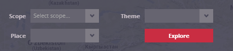

Setting analysis characteristics – basic mode of the panel
The basic version of this panel is intended for accessing the analysis tool. It is necessary to fill in all three menus in the panel to open the analysis.

In the basic mode of the panel, you can specify basic analysis characteristics by setting the:
The correct order must be maintained when setting these three parameters: first, a scope has to be defined. After that, the setting of both place and theme is enabled. You must select an item in all three menus and then press the “Explore” button to get to the next session. This confirmation expands the panel for setting of analysis characteristics to the extended mode, and it also opens the default visualization for the selected combination of scope and theme, and zooms to place of interest.